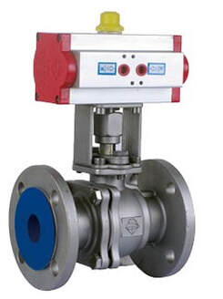
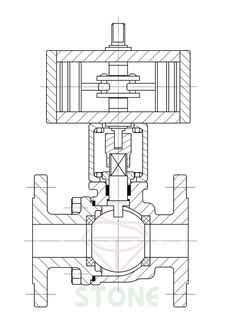
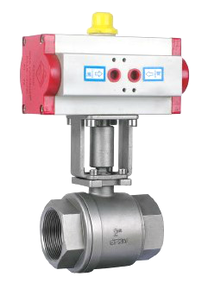
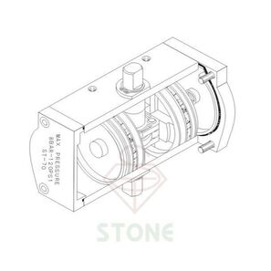
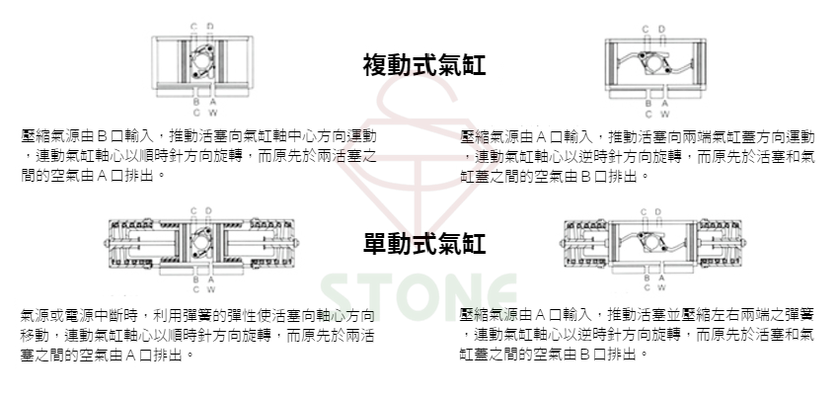
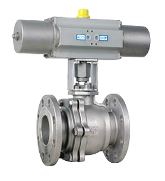
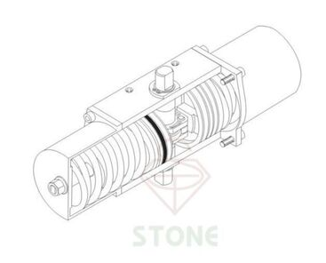
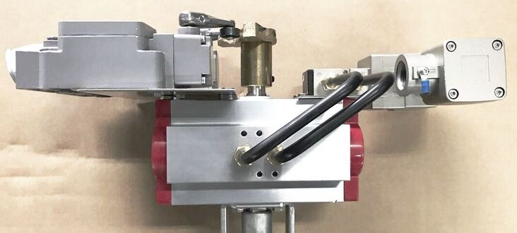

部分手動閥附有氣動執行器裝配平台，可依需求選擇使用氣動執行器或手柄、手輪。
因應使用環境、空間、流量、溫度等因素選用不同方式作動的閥門。
以下要介紹的是以氣體來作動的*氣動執行器
*註："Pneumatic actuators"翻譯為「氣動執行器」或「氣動驅動器」，
但一般業界亦以「氣缸」稱之。
閥門作動主要方式
．手動(手柄、手輪)
．電動執行器
．氣動執行器
什麼是氣動閥？
氣動閥顧名思義指的就是以氣源作為動力的控制閥，與電動閥相比，只需壓縮氣源的氣動閥因構造簡單、操作方便而廣泛使用，室外、高溫或其他環境較惡劣的場所基本上都是使用氣動閥。
很多人認為氣動閥門就是一個產品或一個零組件，其實氣動閥可以拆成兩大主體：「氣缸」與「閥門」。


氣缸的工作原理係利用壓縮空氣作為動力來源，當壓縮氣源進入到氣缸腔內時來推動氣缸活塞，根據進出氣孔的不同，活塞會往氣缸蓋兩端或者往軸心方向作直線運動，活塞作動時連動著曲臂帶動氣缸軸心使氣缸軸心作90度旋轉，氣缸軸心旋轉的同時也帶動了下方連接的閥門，進而使閥門達到啟閉、控制的效果。


關於「閥」又有各式種類了，例如球塞閥、蝶閥、球型閥、閘閥、安全閥等等。
而氣動「閥」最常見的就是球塞閥和蝶型閥
參考連結 - 閥門種類分不清楚嗎？三分鐘讓你認識五種常見的閥門
那什麼是單動式氣缸？
以比較簡單方式來說，複動式氣缸分別以進氣口和出氣孔來做開關的動作，單動式氣缸則從單一進氣孔即可控制。
如下圖所示

單動式氣缸內部係利用「彈簧」使活塞做回彈的動作，氣源壓力由單一氣孔輸入，當壓縮氣源進入到氣缸腔內，壓力使活塞分別向氣缸蓋兩端方向推去，此時於氣缸蓋內的彈簧受活塞擠壓處於壓縮狀態。而當氣源中斷，氣缸內無氣源壓力，彈簧不再受活塞擠壓而回彈，將活塞向氣缸軸心方向推回，以此作用取代進出氣孔的切換。


所以一般情況下單動式氣缸的功能就是當氣源輸入時閥門開啟，而當氣源中斷時彈簧則復歸，自動將閥門關閉。
依據工作需求的不同也可以裝配不同的配件
例如電磁閥、三點組合、微動開關和閥門定位器等
參考連結 - 為什麼要加裝三點組合？維持、穩固你的生產效率！
參考連結 - 氣動閥加裝電磁閥，使工作系統更有效率
